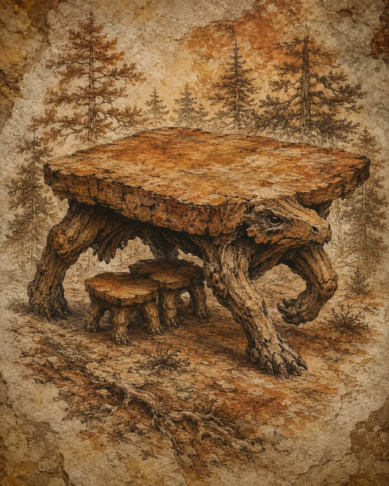
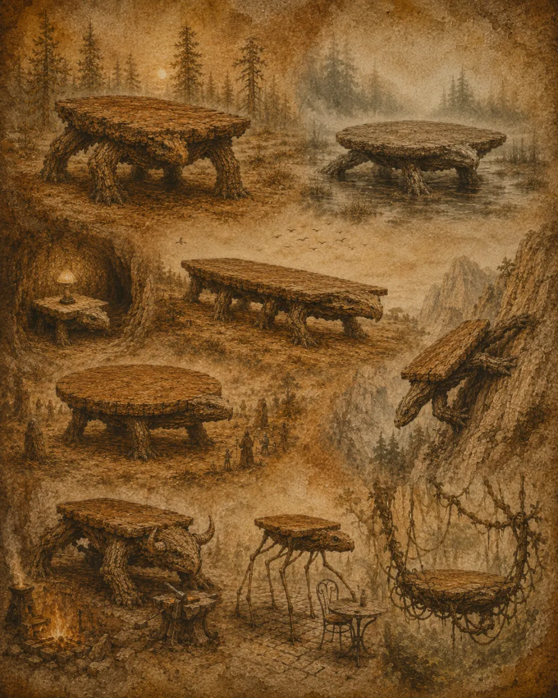
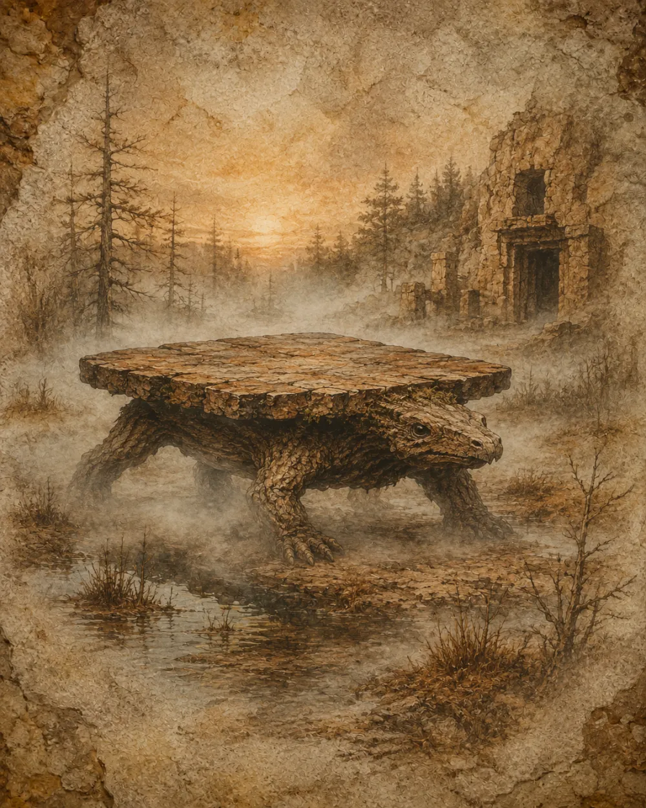
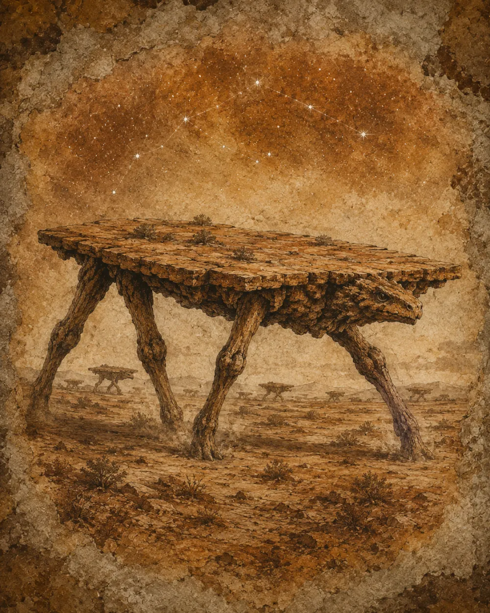
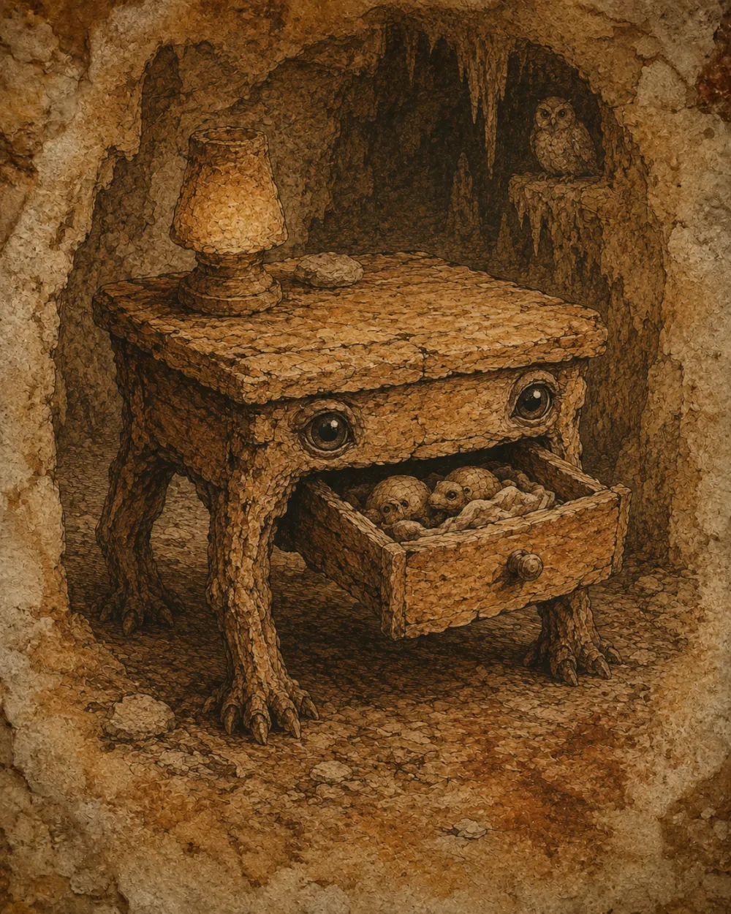
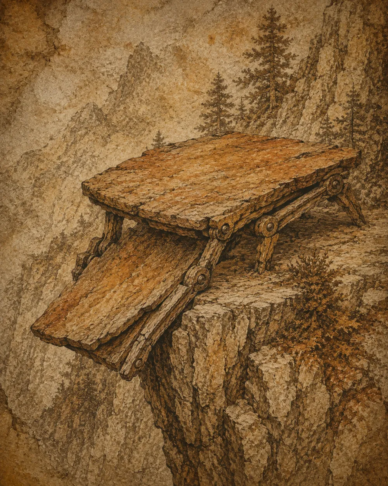
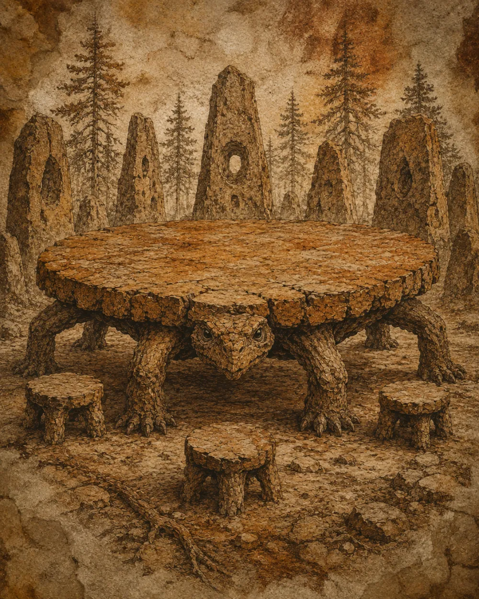
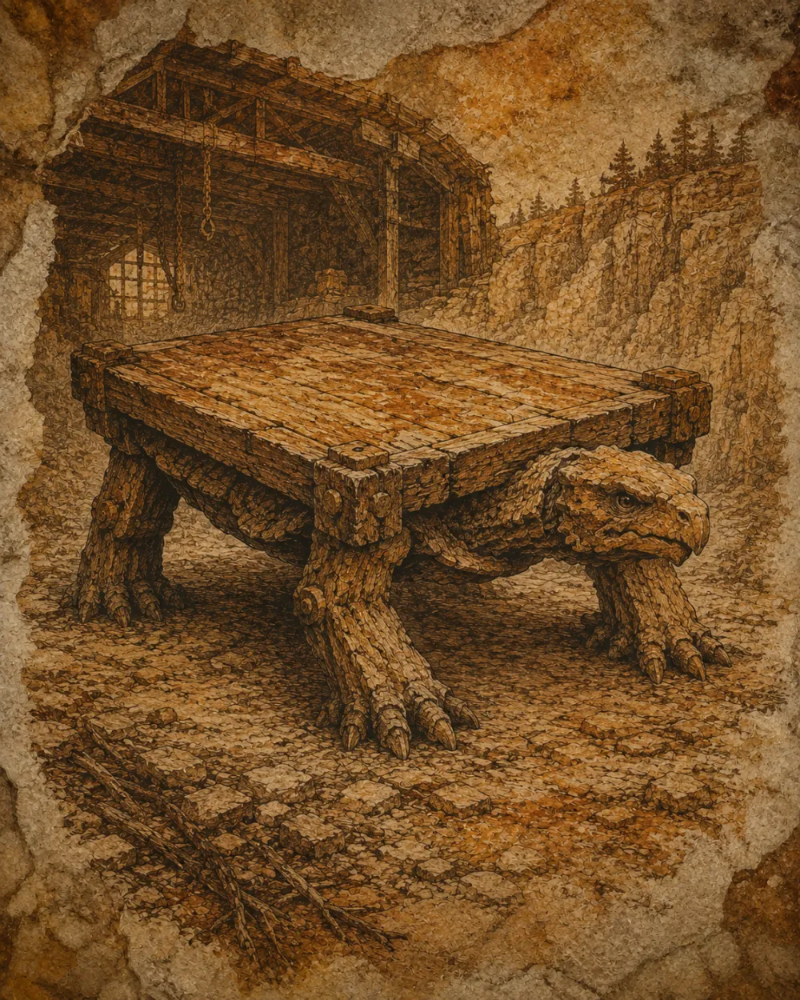
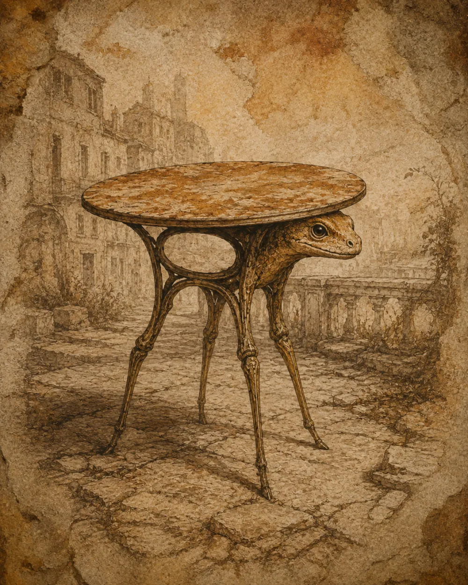
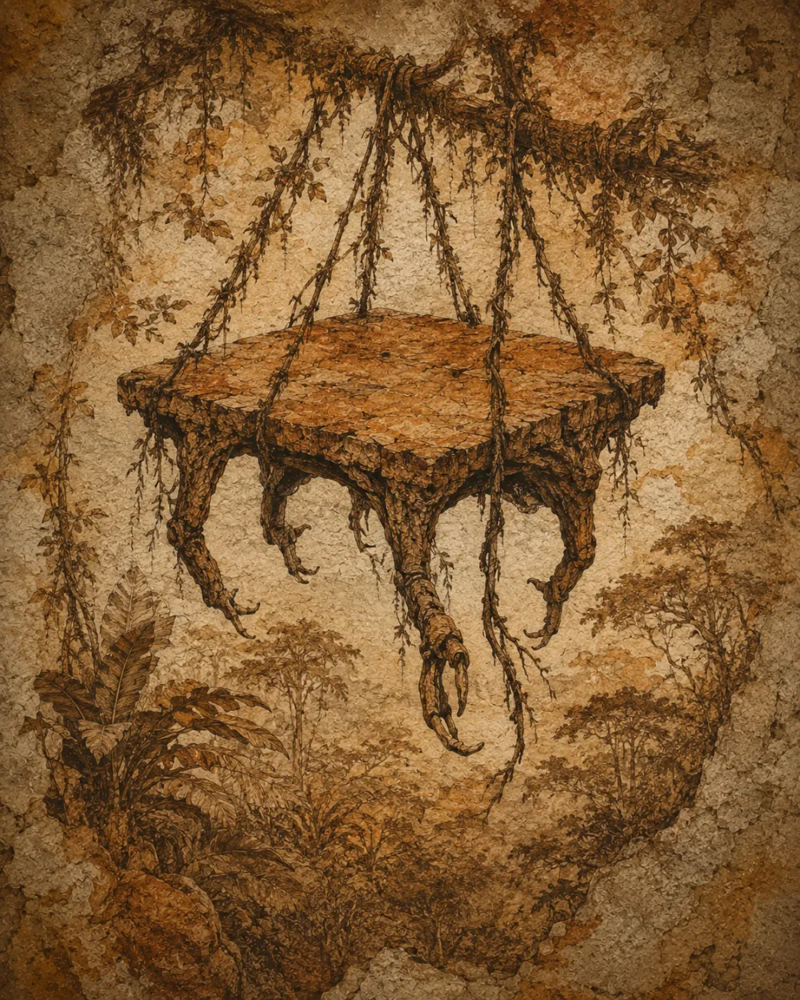

Table des pins noirs
Tabula pinicolaTerritoriale, avance par bonds courts et protège ses jeunes tabourets sous son plateau.
Habitat : Forêts de conifères, sols acidesAlimentation : Rosée résineuse, lichens, aiguilles tombées
La famille des Tabulidés regroupe des organismes à plateau porteur, à pattes locomotrices et au comportement social variable.

Leur classification reste débattue : certains naturalistes y voient des descendants du bois, d’autres les ultimes témoins d’une biologie minérale. Les neuf espèces ci-dessous ont été relevées sur le terrain et figurées d’après photographie.

Territoriale, avance par bonds courts et protège ses jeunes tabourets sous son plateau.

Se déplace à l’aube, presque invisible quand le brouillard descend sur la tourbière.

Voyage en lignes lentes de trente à cent individus, guidée par les étoiles basses.

Active la nuit ; couve ses œufs-chevilles dans son tiroir et craque doucement pour rassurer sa portée.

Déploie ou replie son plateau en un éclair, puis glisse le long des parois comme une feuille de schiste.

Se rassemble en cercle, chaque individu orientant son plateau vers le centre ; la matriarche mène la harde.

Puissante et solitaire, creuse des abris de ses coins renforcés ; convoitée par les bûcherons.

Très sociable ; communique par tintement du plateau et rotation des pieds, à la tombée du jour.

Vit accrochée aux branches ; ne descend au sol que pour pondre ses tabourets.
Règne : Mobilia silenciosa · Embranchement : Quadrupedia planata · Classe : Tabuliformes · Ordre : Mensales · Famille : Tabulidae.
Cette classification n’est pas définitive. Les traces dans la poussière indiquent que certaines espèces possèdent quatre pattes, d’autres trois, six, voire un nombre variable lors des mues saisonnières. On reconnaît pourtant toutes les tables vivantes à leur réflexe de stabilisation : face au danger, elles cherchent l’horizontalité parfaite.